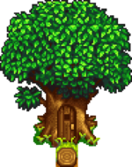
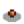
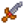
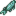

Dağ
Dağ, Yıldızçiyi Vadisi'nin kuzeyinde bulunan bir bölgedir. Oyunun başında sadece iki çıkış bulunur: güneyde Pelikan Kasabası'na giden ve batıda da ormanönüne giden iki çıkış. Yine de oyunda ilerledikçe farklı olaylar ile yeni çıkışlar ortaya çıkar:
- Bahar 5'te gölün kuzeyinde köprüyü engelleyen toprak kayması temizlenir ve Madenler ile Maceraperestler Loncası'na erişim sağlanır.
- Yaz 3'te bir deprem gerçekleşir ve dağdan demiryoluna bir giriş açılır.
- Haritanın doğusundaki Taş Ocağına giden köprü tamir edilebilir (Zanaat Odası yığınları tamamlandığında veya Joja Toplumsal Gelişim Proje Formundan
 25.000g karşılığında "Köprü" satın alındığında tamir edilebilir).
25.000g karşılığında "Köprü" satın alındığında tamir edilebilir). - Mağara girişinin batısında bulunan ve su akışını engelleyen Parıldayan Kaya kaldırılabilir (Balık Havuzu yığınları tamamlandığında veya Joja Toplumsal Gelişim Proje Formundan 20.000g karşılığında "Elekleme" satın alındığında kaldırılabilir).
Özellikler
| Görsel | İsim | Açıklama | Oturanlar |
|---|---|---|---|
 |
Marangoz Atölyesi | Batıda, Robin'in marangozluk işini yaptığı Marangoz Atölyesi bulunur. Kocası Demetrius ve çocukları Maru ile Sebastian da burada yaşar. | |
 |
Çadır | Marangoz Atölyesi'nin kuzeydoğusundadır. Linus'un yaşadığı ve zamanının çoğunu geçirdiği yerdir. | |
 |
Ağaç Ev | Demiryolunnun girişinin doğusunda ve Linus'ın çadırının batısında büyük bir ağaçtadır. Sadece Leo ile 6 arkadaşlık puanına erişildikten sonra erişilebilir. | |
 |
Madenler | Gölün ötesinde kasabanın birincil taş ve cevher kaynağı olan ve canavarlar ile istila edilmiş bir madenin girişi bulunur. | |
 |
Maceraperestler Loncası | Madenlerin biraz ötesindedir. Burada Marlon ve Gil yaşar. Erişildikten sonra belirli silahlar, ayakkabılar ve yüzükler satın alınabilir. Ayrıca canavar yok etme karşılığında ödüller verilir. | |
 |
Taş Ocağı | Yıkılmış köprünün ötesinde bulunan ve her gün taş ve cevher üreten büyük bir alandır. Zanaat Odası yığınları tamamlandığında veya Joja Toplumsal Gelişim Proje Formundan |
Toplayıcılık

Dağda yerde belirebilecek toplanılabilir ögeler şunlardır:[1]
- Baharda:
 Pırasa (%58) ve
Pırasa (%58) ve  Yabani Bayır Turpu (%42)
Yabani Bayır Turpu (%42) - Yazda:
 Üzüm (%62) ve
Üzüm (%62) ve  Baharat Meyvesi (%38)
Baharat Meyvesi (%38) - Güzde:
 Fındık (%53),
Fındık (%53),  Mantar (%24) ve
Mantar (%24) ve  Çakaleriği (%24)
Çakaleriği (%24) - Kışta:
 Çiğdem (%40),
Çiğdem (%40),  Kristal Meyve (%38) ve
Kristal Meyve (%38) ve  Çobanpüskülü (%22)
Çobanpüskülü (%22)
Toplanılabilir ögeler gece başı 0,5 oran ile belirir.[2] Haritada ortaya çıkmaları mümkün olan yerler kırmızı ve magenta karelerde gösterilmiştir; orijinal ağaçlar bulunuyorsa, magenta karelerde %90 daha az çıkma oranı vardır çünkü o kareler, ağaçların arkalarında kalır ve görünmeleri zordur.
Eser Noktaları
Dağda Eser Noktaları kazılarak bulunabilecek eserler şunlardır:
 Tarih Öncesi Kafatası (%0,6 + %3-6[3])
Tarih Öncesi Kafatası (%0,6 + %3-6[3]) Paslı Dişli (%4)
Paslı Dişli (%4) İlkel El Baltası (%3)
İlkel El Baltası (%3) Eski Bebek (%3)
Eski Bebek (%3) İlkel Araç (%2)
İlkel Araç (%2) Trilobit (%1,8)
Trilobit (%1,8) Okbaşı (%1,6)
Okbaşı (%1,6) Çiğneme Çubuğu (%1,5)
Çiğneme Çubuğu (%1,5) Kemik Kaval (%0,7)
Kemik Kaval (%0,7)-  Eski Tohum (%0,7)
 Amfibi Fosili (%0,6)
Amfibi Fosili (%0,6)-  Eski Kılıç (%0,6)
 Dinozor Yumurtası (%0,6)
Dinozor Yumurtası (%0,6).png/24px-Strange_Doll_(green).png) Garip Bebek (yeşil) (%0,06)
Garip Bebek (yeşil) (%0,06).png/24px-Strange_Doll_(yellow).png) Garip Bebek (sarı) (%0,06)
Garip Bebek (sarı) (%0,06)
Other possible items are:
- 1-3
 Kil (%14-29[3])
Kil (%14-29[3])  Kayıp Kitap (%20 + %3-7[3]); bütün Kayıp Kitaplar bulunduğunda, Kayıp Kitaplar yerine
Kayıp Kitap (%20 + %3-7[3]); bütün Kayıp Kitaplar bulunduğunda, Kayıp Kitaplar yerine  Karışık Tohumlar çıkmaya başlar.
Karışık Tohumlar çıkmaya başlar.- Sadece Kışta:
 Kış Kökü (%18)
Kış Kökü (%18) - Sadece Kışta:
 Kar Patatesi (%12)
Kar Patatesi (%12) - 1-3
 Taş (%5-10[3])
Taş (%5-10[3]) - 1-3
 Bakır Cevheri (%2,5-5[3])
Bakır Cevheri (%2,5-5[3]) - 1-3
 Kömür (%1,8-4[3])
Kömür (%1,8-4[3]) - Sadece Baharda: 2-5
 Pirinç Filizis (%4)
Pirinç Filizis (%4) - Daha önce bulunmamış bir
 Gizli Not: %3'lük bir şansa kadar, eğer oyuncu büyütece sahip ise.
Gizli Not: %3'lük bir şansa kadar, eğer oyuncu büyütece sahip ise.
Eser noktaları gece başı 0,4 gibi bir oran ile belirir, kışta ise bu oran gece başı 0,9'a çıkar.[4]
Balıkçılık

Birden fazla türde balığa ev sahipliği yapan bir göl, Dağ haritasının ortasını doldurur. Burada Sazanbalığı yakalamak kolaydır, bu yüzden oyunun başlarında balıkçılık için pratik yapmada iyi bir yerdir. Bir Efsanevi Balık olan Efsane de burada bulunabilir, bununla birlikte beş efsanevi balık II'den biri olan Efsane II de.
| Saat | |||||||||||||||||||||
|---|---|---|---|---|---|---|---|---|---|---|---|---|---|---|---|---|---|---|---|---|---|
| 06 | 07 | 08 | 09 | 10 | 11 | 12 | 13 | 14 | 15 | 16 | 17 | 18 | 19 | 20 | 21 | 22 | 23 | 00 | 01 | ||
| Sadece yağmurlu gün | |||||||||||||||||||||
| 06 | 07 | 08 | 09 | 10 | 11 | 12 | 13 | 14 | 15 | 16 | 17 | 18 | 19 | 20 | 21 | 22 | 23 | 00 | 01 | ||
| Sadece güneşli gün | |||||||||||||||||||||
|  Mersinbalığı | |||||||||||||||||||||
| 06 | 07 | 08 | 09 | 10 | 11 | 12 | 13 | 14 | 15 | 16 | 17 | 18 | 19 | 20 | 21 | 22 | 23 | 00 | 01 | ||
| Sadece yağmurlu gün | |||||||||||||||||||||
| 06 | 07 | 08 | 09 | 10 | 11 | 12 | 13 | 14 | 15 | 16 | 17 | 18 | 19 | 20 | 21 | 22 | 23 | 00 | 01 | ||
| Mersinbalığı | |||||||||||||||||||||
Referanslar
- ↑ Toplanılabilir her öge için, verilen oran o mevsim belirebilen bütün toplanılabilir ögelerin genel oranıdır. Girdi bilgisi Locations.xnb, GameLocation::spawnObjects'deki kod ile çalıştırılmış.
- ↑ Dağ'daki 5535 kareden, 210'u (%4) standart toplanılabilir ögelerin belireceği karelerdir. Toplanılabilir ögeler hakkında daha fazla bilgi için, Toplayıcılık'ı inceleyin.
- ↑ 3,0 3,1 3,2 3,3 3,4 3,5 Eser Noktalarından ekstra öge elde etme mevsime bağlıdır. Maksimum şans yaz ve güzdedir. Kışta, bu şans %50 daha az; baharda ise %6 daha azdır. Daha fazla bilgi için Eser Noktası'nı inceleyin.
- ↑ Dağ'daki 5535 kareden, 944'ü (%17) bahar, yaz ve güzde Eser Noktaları için ortaya çıkma kareleridir. 1515'i (%27) kış için ortaya çıkma kareleridir. Daha fazla bilgi için Eser Noktası'nı inceleyin.
| Mekanlar | |
|---|---|
| Mekanlar | Cadı'nın Bataklığı • Çiftlik Göleti • Çiftlik • Çöl • Dağ • Demiryolu • Gizli Koru • Kafatası Mağarası • Kömürözü Ormanı • Kumsal • Lağım • Madenler • Mağara • Maden Arabası • Mezarlık • Zencefil Adası • Ustalık Mağarası • Mutant Böcek Yuvası • Ormanönü • Otobüs Durağı • Pelikan Kasabası • Taş Ocağı • Taş Ocağı Madeni • Tünel |